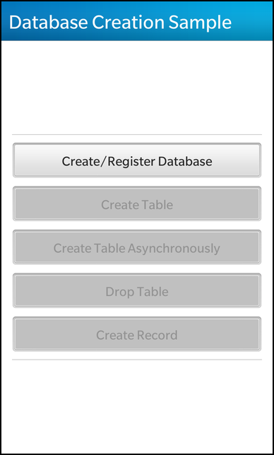

Files:
The Database creation example demonstrates how to create a database, table and table records using the SqlQuery instance.

In this example we'll learn how to use the QtSqlDatabase and QtSqlQuery to create databases, tables and records via the Sql syntax.
The UI of this sample application is very simplistic, made up of four buttons that represent each of the database stages, such as "creation of database", "creation of table", "creation of records" and the ability to drop entire tables as well.
The business logic of the application is encapsulated in the App class, which provides the various invokable methods for each one of these buttons.
// Four buttons to call each of the functions in app. Button { horizontalAlignment: HorizontalAlignment.Fill text: qsTr("Create/Register Database") onClicked: { root.databaseOpen = _app.createDatabase() } } Button { horizontalAlignment: HorizontalAlignment.Fill text: qsTr("Create Table") enabled: root.databaseOpen onClicked: { _app.createTable() } } Button { horizontalAlignment: HorizontalAlignment.Fill text: qsTr("Create Table Asynchronously") enabled: root.databaseOpen onClicked: { _app.createTableAsync() } } Button { horizontalAlignment: HorizontalAlignment.Fill text: qsTr("Drop Table") enabled: root.databaseOpen onClicked: { _app.dropTable() } } Button { horizontalAlignment: HorizontalAlignment.Fill text: qsTr("Create Record") enabled: root.databaseOpen onClicked: { _app.createRecord("John", "Doe") } }
Each of these buttons invokes one of the methods that was exposed through the app instance that was introduced into the qml context using setContextProperty().
This app class contains the business logic dealing with the database instance.
App::App() : m_sqlConnection(0) { // Create a QMLDocument from the definition in main.qml QmlDocument *qml = QmlDocument::create("asset:///main.qml"); //-- setContextProperty expose C++ object in QML as an variable qml->setContextProperty("_app", this); // Creates the root object for the UI as defined in main.qml AbstractPane* root = qml->createRootObject<AbstractPane>(); // Give the application the root node to display. Application::instance()->setScene(root); }
The constructor intitializes the instance variables, and creates the qml document as well as setting the application scene to the created UI object which stems from the document.
bool App::createDatabase() { // 1. Create an instance of QSqlDatabase with the driver for SQLite databases. // Note: QSqlDatabase::addDatabase(QString type, QString connectionName = default) // The above prototype shows that QSqlDatabase can take an optional second parameter // referred to as the 'connectionName'. The 'connectionName' should be a unique string // the represents your database connection. It allows you to get access to your database // connection in the future via: // QSqlDatabase db = QSqlDatabase::database(QString connectionName); // If the connectionName is not specified, then it is assumed that this connection will // become the default connection which can be referred to without using the connectionName // parameter. (See step 1 of 'App::createTable') for more information. QSqlDatabase database = QSqlDatabase::addDatabase("QSQLITE"); bool success = false; // 2. Set the path of where the database will be located. // Note: The db extension is not required database.setDatabaseName("./data/customerDatabase.db"); // 3. Open a connection to the database, if the database does not exist // one will be created if permitted. if (database.open()) { alert(tr("Database created/registered.")); success = true; } else { // If the database fails to open, error information can be accessed via // the lastError function. const QSqlError error = database.lastError(); alert(tr("Error opening connection to the database: %1").arg(error.text())); } // 4. Close the connection to the database. // Be warned, closing the database will invalidate any SqlQuery objects (see below) database.close(); return success; }
This method, when invoked, creates the database using QSqlDatabase. Every time you need to refer to the created database you can invoke QSqlDatabase::database() to get the connection instance. However, you can specify a name to the database() method to refer to another database connection if a name was given at creation time.
// ----------------------------------------------------------------------------------------------- // Synchronous Database Functionality with QSqlDatabase and QSqlQuery void App::createTable() { // 1. Get a reference to the database, which will automatically open the connection // if it is not already open. // NOTE: The below code assumes that the database being accessed is the 'default // connection' database. If a database connection was created with a registered // connection name then you would access the database via: // QSqlDatabase db = QSqlDatabase::database(<connectionName>); QSqlDatabase database = QSqlDatabase::database(); // 2. Create a query to execute. // The below query creates a table with customerID, firstName, and lastName columns // if it does not already exist. const QString createSQL = "CREATE TABLE IF NOT EXISTS customers ( " " customerID INTEGER PRIMARY KEY AUTOINCREMENT, " " firstName VARCHAR, " " lastName VARCHAR" ");"; // 3. Create an QSqlQuery object with which you can execute queries // NOTE: The QSqlDatabase function has an 'exec' function, however this // is deprecated and should be avoided. QSqlQuery query(database); if (query.exec(createSQL)) { alert(tr("Table creation query execute successfully")); } else { // If 'exec' fails, error information can be accessed via the lastError function // the last error is reset every time exec is called. const QSqlError error = query.lastError(); alert(tr("Create table error: %1").arg(error.text())); } // 4. Optionally close the database connection if we no longer plan to use it // Note that calling QSqlDatabase::database() will automatically re-open // the connection for us. // NOTE: Closing the database invalidates any QSqlQuery objects you have created // with this database connection. database.close(); } void App::dropTable() { // 1. Get a reference to the database, which will automatically open the connection // if it is not already open. // NOTE: The below code assumes that the database being accessed is the 'default // connection' database. If a database connection was created with a registered // connection name then you would access the database via: // QSqlDatabase db = QSqlDatabase::database(<connectionName>); QSqlDatabase database = QSqlDatabase::database(); // 2. When dropping a table, you should first verify if it exists or not. // Alternatively, you can embed into your SQL statement a check to see // if the table exists. // The below example embeds the check into the SQL statement. // NOTE: If you wish to check if the table exists in code, you can use the // below example: // if(database.tables().contains("customers")) { // alert(tr("The 'customers' table exists")); // } // 3. Create an QSqlQuery object with which you can execute queries // NOTE: The QSqlDatabase function has an 'exec' function, however this // is deprecated and should be avoided. QSqlQuery query(database); const QString dropSQL = "DROP TABLE IF EXISTS customers"; if (query.exec(dropSQL)) { alert(tr("Table drop query executed successfully.")); } else { // If 'exec' fails, error information can be accessed via the lastError function // the last error is reset every time exec is called. const QSqlError error = query.lastError(); alert(tr("Drop table error: %1").arg(error.text())); } // 4. Optionally close the database connection if we no longer plan to use it // Note that calling QSqlDatabase::database() will automatically re-open // the connection for us. // NOTE: Closing the database invalidates any QSqlQuery objects you have created // with this database connection. database.close(); } void App::createRecord(const QString &firstName, const QString &lastName) { // 1. Get a reference to the database, which will automatically open the connection // if it is not already open. // NOTE: The below code assumes that the database being accessed is the 'default // connection' database. If a database connection was created with a registered // connection name then you would access the database via: // QSqlDatabase db = QSqlDatabase::database(<connectionName>); QSqlDatabase database = QSqlDatabase::database(); // 2. Verify the table exists first, always a good safety pre-caution. // For performance, on application startup, you would verify that all tables exist // and can create or update any that do not. This would allow you to // skip this check to see if a table exists or not in the database. if (!database.tables().contains("customers")) { alert(tr("Create record error: customers table does not exist.")); } else { // 3. Create an QSqlQuery object with which you can execute queries // In this example we bind parameters in the query. A large advantage to using // bindings (aside from performance enhancements) is that input is automatically // escaped avoiding potential issues with odd characters (quotes) and prevents // SQL Injection attacks. // Note that for databases that do not support bindings, Qt simulates the binding // effects. // IMPORTANT NOTE: If ever accepting user information without using bindings, // be sure to 'escape' your queries. QSqlQuery query(database); query.prepare("INSERT INTO customers (firstName, lastName) VALUES(:firstName, :lastName)"); query.bindValue(":firstName", firstName); query.bindValue(":lastName", lastName); query.exec(); // Note that no SQL Statement is passed to 'exec' as it is a prepared statement. if (query.exec()) { alert(tr("Record created")); } else { // If 'exec' fails, error information can be accessed via the lastError function // the last error is reset every time exec is called. const QSqlError error = query.lastError(); alert(tr("Create record error: %1").arg(error.text())); } } // 4. Optionally close the database connection if we no longer plan to use it // Note that calling QSqlDatabase::database() will automatically re-open // the connection for us. // NOTE: Closing the database invalidates any QSqlQuery objects you have created // with this database connection. database.close(); }
These methods manipulate the database connection using appropriate sql queries to create tables, records or to drop them.
// ----------------------------------------------------------------------------------------------- // Asynchronous Database Functionality with SqlConnection // The above examples all used QSqlQuery to interact with the database synchronous. // This below example demonstrates how interactions can be done asynchronously // by creating a database table. void App::createTableAsync() { // Sanity check to ensure that we don't execute the m_sqlConnection twice using the same object if (m_sqlConnection) { alert(tr("Error: previous async SqlConnection still executing")); return; } // 1. Create a new SqlConnection object and point it at the database // It will automatically open a connection to the database using the QSqlDatabase object // if necessary. Note that a reference to the SqlConnection object is tracked so that // it can be freed later. Alternatively, you could assign the SqlConnection m_sqlConnection = new SqlConnection("./data/customerDatabase.db"); // 2. Connect a slot to the SqlConnection objects 'reply' signal which is emitted when the // executed query is complete. // Note: types are fully qualified with namespaces (e,g, bb::data::) when used with all // MOC macros (in this case, SIGNAL and SLOT) bool ok = connect(m_sqlConnection, SIGNAL(reply(const bb::data::DataAccessReply&)), this, SLOT(onCreateTableReply(const bb::data::DataAccessReply&))); Q_ASSERT(ok); Q_UNUSED(ok); // 3. Create the SQL Query that you wish to execute asynchronously. // NOTE: The below query does not use the SQL statement 'IF NOT EXISTS' // Therefore, it will report an error if the table already exists and you // try to create it. const QString createSQL = "CREATE TABLE customers ( " " customerID INTEGER PRIMARY KEY AUTOINCREMENT, " " firstName VARCHAR, " " lastName VARCHAR " ");"; // 4. Execute the query. Note, that upon function return, the query may not have run yet // You need to wait for the 'reply' signal m_sqlConnection->execute(createSQL); qDebug() << "Create table started..."; }
This method creates a database table asynchronously using an SqlConnection and the Qt signals and slots mechanism to indicate the success or failure of this action.